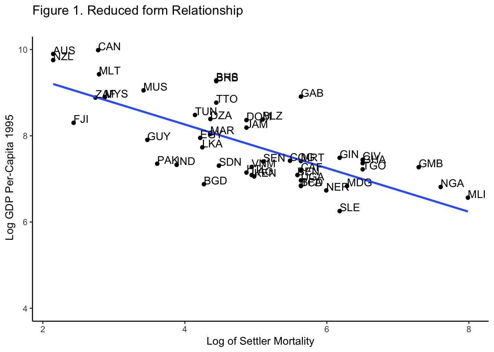

8 Exercise 1: Instrumental Variables
In this exercise, we will replicate some of the results of the paper “The Colonial Origins of Comparative Development: An Empirical Investigation” by Acemoglu, Johnson, and Robinson. This paper was published in the American Economic Review in 2003. You can find the paper, its data, and Jaakko’s exercise here:
For the theory and context of the method, check Chapter 7 of Scott Cunningham’s Causal Inference Mixtape.
8.1 Packages and Data
We will use the following packages: install them before loading them.
# 1. Data arrange, importing data, strings and more. Check what it includes!
library(tidyverse)
# 2. Read .dta Format
library(haven)
# 3. Robust standard errors
library(estimatr)
# 4. ivreg: instrumental variables
library(ivreg) We read the data, In our case, the data is stored in a folder named “Data” within the R project. You should specify your data’s directory.
MI <- read_dta("./Data/final_dataset_MI.dta")
table5 <- read_dta("./Data/maketable5.dta")Further, we only select the variables of interest and clean the NA’s.
# 1. Select Variables of Interest
MI <- MI %>%
select( change10_ineq, pre_demo_ineg_best, acemoglu_demo, ccodealp)
# 2. Remove NA's
MI <- MI %>%
filter( !is.na(change10_ineq))8.2 Paper Discussion
Acemoglu et al. study institutions with more secure property rights and less distortionary policies; they are referred to as “good institutions”. They are measured with the Average Protection Against Expropriation Risk, which is measured on a scale from 0 to 10. Their main finding regards the role of institutions in development: the higher the protection of property rights, the higher the income per capita.
8.3 Endogeneity Discussion
Institutions may be endogenous for various reasons. Acemoglu et al. thus use an instrumental variables approach. The proposed instrument is the mortality of settlers; they justify it by arguing that the mortality of settlers doesn’t affect the GDP per capita today.
Yet, the exclusion restriction states that the instrument \(Z\) must also be uncorrelated with the error term, \(\epsilon\). A threat is that past health determines current health; thus, past health is correlated with GDP. Although, they justify the uncorrelatedness of mortality with GDP by arguing that the natives were resilient to the diseases that killed the settlers.
8.4 Instrumental Variables
- Plot a nice-looking graph that illustrates the relationship between the outcome variable and the instrument.
ggplot(filter(table5, f_french + f_brit >= 1), aes( y = logpgp95, x = logem4, label = shortnam)) +
geom_point() +
geom_smooth(method = "lm", se = FALSE) +
scale_y_continuous(limits = c(4, 10)) +
labs(x = "Log of Settler Mortality", y = " Log GDP Per-Capita 1995", title = "Figure 1. Reduced form Relationship
")+
geom_text(hjust=0, vjust=0) +
theme_classic() 
- Then, let us have a look at the reduced-form regression more formally. Run the regressions in part (b) but replace institutional quality with the instrumental variable. Briefly discuss the regression results.
f1 <- lm(logpgp95 ~ logem4, data = table5)
summary(f1)##
## Call:
## lm(formula = logpgp95 ~ logem4, data = table5)
##
## Residuals:
## Min 1Q Median 3Q Max
## -2.71304 -0.53326 0.01954 0.47188 1.44673
##
## Coefficients:
## Estimate Std. Error t value Pr(>|t|)
## (Intercept) 10.66025 0.30528 34.92 < 2e-16 ***
## logem4 -0.56412 0.06389 -8.83 2.09e-13 ***
## ---
## Signif. codes: 0 '***' 0.001 '**' 0.01 '*' 0.05 '.' 0.1 ' ' 1
##
## Residual standard error: 0.7563 on 79 degrees of freedom
## (82 observations deleted due to missingness)
## Multiple R-squared: 0.4967, Adjusted R-squared: 0.4903
## F-statistic: 77.96 on 1 and 79 DF, p-value: 2.094e-13We note that the F-Statistic is 77.96 , therefore the instrument is strong.
8.5 IV Part 2
Try now repeating the regressions in part (b) using IV estimation. Discuss both the first stage and 2SLS results. Try also locating the first-stage F statistic in the regression output.
- Is the instrument weak or strong?
- Do you know why it is important to have a strong instrument?
Run then the following OLS regressions, and use robust standard errors:
Regress the outcome variable on institutional quality, no controls
Regress the outcome variable on institutional quality, and control for an indicator for French legal origin, being a former French colony, share of Catholics, share of Muslims, and share of other than Catholic/Protestant/Muslim
lm_2 <- lm_robust(logpgp95 ~ sjlofr + f_french + avexpr + catho80 + muslim80 + no_cpm80 , data = table5)
summary(lm_2)##
## Call:
## lm_robust(formula = logpgp95 ~ sjlofr + f_french + avexpr + catho80 +
## muslim80 + no_cpm80, data = table5)
##
## Standard error type: HC2
##
## Coefficients:
## Estimate Std. Error t value Pr(>|t|) CI Lower CI Upper DF
## (Intercept) 4.6663414 0.403283 11.5709 2.131e-20 3.866617 5.4660660 104
## sjlofr 0.2124659 0.227705 0.9331 3.529e-01 -0.239082 0.6640135 104
## f_french -0.2827433 0.199424 -1.4178 1.592e-01 -0.678208 0.1127215 104
## avexpr 0.5417709 0.035225 15.3802 1.521e-28 0.471918 0.6116239 104
## catho80 0.0009357 0.002681 0.3491 7.277e-01 -0.004380 0.0062514 104
## muslim80 -0.0012009 0.003041 -0.3949 6.937e-01 -0.007231 0.0048291 104
## no_cpm80 -0.0063496 0.002810 -2.2598 2.592e-02 -0.011922 -0.0007776 104
##
## Multiple R-squared: 0.6701 , Adjusted R-squared: 0.651
## F-statistic: 101.8 on 6 and 104 DF, p-value: < 2.2e-16- Regress the outcome variable on institutional quality, control for location of the capital (absolute latitude), an indicator for French legal origin, being a former French colony, share of Catholics, share of Muslims, and share of other than Catholic/Protestant/Muslim
lm_3 <- lm_robust(logpgp95 ~ avexpr + lat_abst + sjlofr + f_french + catho80 + muslim80 + no_cpm80 , data = table5)
summary(lm_3)##
## Call:
## lm_robust(formula = logpgp95 ~ avexpr + lat_abst + sjlofr + f_french +
## catho80 + muslim80 + no_cpm80, data = table5)
##
## Standard error type: HC2
##
## Coefficients:
## Estimate Std. Error t value Pr(>|t|) CI Lower CI Upper DF
## (Intercept) 4.7837413 0.411063 11.6375 1.742e-20 3.968495 5.598987 103
## avexpr 0.4769486 0.056589 8.4283 2.246e-13 0.364718 0.589179 103
## lat_abst 0.8427422 0.522582 1.6126 1.099e-01 -0.193677 1.879161 103
## sjlofr 0.2143537 0.220776 0.9709 3.339e-01 -0.223504 0.652211 103
## f_french -0.2961695 0.189465 -1.5632 1.211e-01 -0.671928 0.079589 103
## catho80 0.0022475 0.002708 0.8298 4.086e-01 -0.003124 0.007619 103
## muslim80 -0.0003111 0.003005 -0.1035 9.177e-01 -0.006270 0.005648 103
## no_cpm80 -0.0047503 0.003049 -1.5579 1.223e-01 -0.010798 0.001297 103
##
## Multiple R-squared: 0.6798 , Adjusted R-squared: 0.658
## F-statistic: 98.54 on 7 and 103 DF, p-value: < 2.2e-16- What is the relationship between institutional quality and income levels?
There is a positive relationship between institutional quality and income levels.
- Is this relationship statistically significant and robust to the inclusion of additional control variables?
The relationship is statistically significant in the three cases; nevertheless, with additional control variables the effect of institutional quality decreases.
- Regress the outcome variable on institutional quality, no controls
iv1 <- ivreg(logpgp95 ~ avexpr | logem4, data = table5)
summary(iv1)##
## Call:
## ivreg(formula = logpgp95 ~ avexpr | logem4, data = table5)
##
## Residuals:
## Min 1Q Median 3Q Max
## -2.28175 -0.55059 0.03401 0.62273 1.57418
##
## Coefficients:
## Estimate Std. Error t value Pr(>|t|)
## (Intercept) 2.3702 0.8376 2.830 0.00612 **
## avexpr 0.8684 0.1250 6.946 1.77e-09 ***
##
## Diagnostic tests:
## df1 df2 statistic p-value
## Weak instruments 1 68 29.80 7.29e-07 ***
## Wu-Hausman 1 67 25.17 4.11e-06 ***
## Sargan 0 NA NA NA
## ---
## Signif. codes: 0 '***' 0.001 '**' 0.01 '*' 0.05 '.' 0.1 ' ' 1
##
## Residual standard error: 0.8899 on 68 degrees of freedom
## Multiple R-Squared: 0.3045, Adjusted R-squared: 0.2942
## Wald test: 48.25 on 1 and 68 DF, p-value: 1.771e-09- Regress the outcome variable on institutional quality, and control for an indicator for French legal origin, being a former French colony, share of Catholics, share of Muslims, and share of other than Catholic/Protestant/Muslim
iv2 <- ivreg(logpgp95 ~ sjlofr + f_french + catho80 + muslim80 + no_cpm80 | avexpr | logem4 , data = table5)
summary(iv2)##
## Call:
## ivreg(formula = logpgp95 ~ sjlofr + f_french + catho80 + muslim80 +
## no_cpm80 | avexpr | logem4, data = table5)
##
## Residuals:
## Min 1Q Median 3Q Max
## -1.8545 -0.5175 0.0298 0.5221 2.0379
##
## Coefficients:
## Estimate Std. Error t value Pr(>|t|)
## (Intercept) 2.5946375 1.2043687 2.154 0.035 *
## avexpr 0.8943097 0.1374527 6.506 1.44e-08 ***
## sjlofr 0.3014438 0.3462820 0.871 0.387
## f_french 0.1505522 0.3184417 0.473 0.638
## catho80 -0.0007391 0.0090070 -0.082 0.935
## muslim80 -0.0081192 0.0078708 -1.032 0.306
## no_cpm80 -0.0136571 0.0087471 -1.561 0.123
##
## Diagnostic tests:
## df1 df2 statistic p-value
## Weak instruments 1 63 21.08 2.16e-05 ***
## Wu-Hausman 1 62 21.92 1.60e-05 ***
## Sargan 0 NA NA NA
## ---
## Signif. codes: 0 '***' 0.001 '**' 0.01 '*' 0.05 '.' 0.1 ' ' 1
##
## Residual standard error: 0.8005 on 63 degrees of freedom
## Multiple R-Squared: 0.4786, Adjusted R-squared: 0.4289
## Wald test: 11.31 on 6 and 63 DF, p-value: 1.541e-08- Regress the outcome variable on institutional quality, control for location of the capital (absolute latitude), an indicator for French legal origin, being a former French colony, share of Catholics, share of Muslims, and share of other than Catholic/Protestant/Muslim
iv3 <- ivreg(logpgp95 ~ lat_abst + sjlofr + f_french + catho80 + muslim80 + no_cpm80 | avexpr | logem4, data = table5)
summary(iv3)##
## Call:
## ivreg(formula = logpgp95 ~ lat_abst + sjlofr + f_french + catho80 +
## muslim80 + no_cpm80 | avexpr | logem4, data = table5)
##
## Residuals:
## Min 1Q Median 3Q Max
## -2.40964 -0.65770 -0.02513 0.75136 2.58007
##
## Coefficients:
## Estimate Std. Error t value Pr(>|t|)
## (Intercept) 1.547088 2.148742 0.720 0.4742
## avexpr 1.131255 0.348786 3.243 0.0019 **
## lat_abst -2.051906 1.954973 -1.050 0.2980
## sjlofr 0.363177 0.455680 0.797 0.4285
## f_french 0.266396 0.432506 0.616 0.5402
## catho80 -0.002328 0.011631 -0.200 0.8420
## muslim80 -0.008077 0.010076 -0.802 0.4259
## no_cpm80 -0.017948 0.012144 -1.478 0.1445
##
## Diagnostic tests:
## df1 df2 statistic p-value
## Weak instruments 1 62 5.943 0.017657 *
## Wu-Hausman 1 61 15.599 0.000206 ***
## Sargan 0 NA NA NA
## ---
## Signif. codes: 0 '***' 0.001 '**' 0.01 '*' 0.05 '.' 0.1 ' ' 1
##
## Residual standard error: 1.025 on 62 degrees of freedom
## Multiple R-Squared: 0.1593, Adjusted R-squared: 0.06439
## Wald test: 6.344 on 7 and 62 DF, p-value: 1.238e-05By examinating the weak instrument F statistic, only in the third case by implementing the location of the capital (absolute latitude) the instrument is weak with an F statistic of 5.93 < 10.